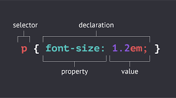

CSS
Cascading Style Sheets is a style sheet language used for describing the presentation of a document written in a markup language such as HTML. CSS is a cornerstone technology of the World Wide Web, alongside HTML and JavaScript.
- CSS stands for Cascading Style Sheets
- CSS describes how HTML elements are to be displayed on screen, paper, or in other media
- CSS saves a lot of work. It can control the layout of multiple web pages all at once
- External stylesheets are stored in CSS files
Syntax
CSS Syntax A CSS rule-set consists of a selector and a declaration block: CSS selector The selector points to the HTML element you want to style. The declaration block contains one or more declarations separated by semicolons. Each declaration includes a CSS property name and a value, separated by a colon. Multiple CSS declarations are separated with semicolons, and declaration blocks are surrounded by curly braces.
CSS selectors
CSS selectors are used to "find" (or select) the HTML elements you want to style. We can divide CSS selectors into five categories:
- Simple selectors (select elements based on name, id, class)
- Combinator selectors (select elements based on a specific relationship between them)
- Pseudo-class selectors (select elements based on a certain state)
- Pseudo-elements selectors (select and style a part of an element)
- Attribute selectors (select elements based on an attribute or attribute value)
- This page will explain the most basic CSS selectors.
CSS colors
Tomato
Orange
Dodgerblue
Mediumseagreen
Gray
Slateblue